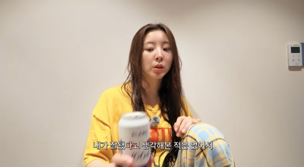

권소현 큐브 PD, 포미닛 막내의 뜻밖의 출근
권소현 큐브 PD라는 조합, 포미닛의 막내를 기억한다면 조금 낯설고 반갑게 느껴질 것 같아요. 라잇썸 일본 앨범 제작에 참여하며 직장인의 일상을 공개했는데요. 후배를 돕고 싶은 마음부터 무대 뒤 스태프를 새롭게 이해하게 된 이야기까지, 이 선택에 담긴 속마음을 정리했어요.
권소현 큐브 PD, 출근하는 포미닛 막내
포미닛 출신 배우 권소현이 큐브엔터테인먼트에서 일하는 모습을 공개했어요. 커피를 챙겨 출근하고 사무실과 행사 현장을 오가는 일상이 담겼는데요. 브이로그에서 스스로 설명한 근무 기간은 6개월 차예요. 회사에서 받은 직함은 PD이지만, 호칭은 편하게 소현 님으로 불러 달라고 했다고 해요. 다른 직원들이 쉬는 날에도 맡은 일이 있어 출근했다고 설명했어요. 커피 한 잔을 챙겨 일터로 향하는 이야기가 직장인의 일상처럼 가깝게 다가오는데요. 무대에 서는 모습과는 다른 일상의 결이 느껴져서 어떤 일을 맡았는지 궁금해지네요.
익숙한 회사에 돌아와도 하는 일까지 익숙한 것은 아니겠지요. 권소현은 특별한 대우보다 사원이라는 마음으로 일을 배우고 싶었다고 설명했어요. 아티스트로 몸담은 회사에서 제작 과정을 배울 기회를 얻었다는 점에도 고마움을 표현했고요. 알려진 이름이나 포미닛 경력에 기대기보다 자신이 할 수 있는 역할을 찾아보려는 태도가 눈에 들어와요. PD라는 직함만큼이나 배우는 사람으로 출근한다는 마음이 이 이야기의 출발점인 것 같아요.

직장 생활을 시작한 이유를 설명하는 권소현 · 출처: 권소현 유튜브·OSEN 게재라잇썸 일본 앨범을 만드는 실무
그렇다면 실제로 맡은 업무는 무엇일까요? 권소현 큐브 PD 업무의 중심에는 라잇썸의 일본 앨범 제작이 있어요. 기획팀과 앨범 기획을 함께 진행하고, A&R 업무를 통해 음원을 수급하고 정리한다고 설명했어요. 아티스트에게 어울리는 음악을 준비하는 제작 과정에 참여하는 셈이에요. 무대에 오를 곡을 전달받던 입장에서 그 곡이 전달되기까지 필요한 일을 배우는 쪽으로 시선이 넓어진 것이네요.
사무실 안에서 자료만 들여다보는 업무로 끝나지도 않아요. 공개된 일상에는 행사 현장에서 멤버들의 의상을 확인하고 필요한 물품을 챙기며 움직이는 모습도 담겼어요. 챌린지에 참여할 사람을 직접 찾는 현장 업무도 했고요. 앨범을 기획하는 일과 멤버들이 활동하는 공간을 챙기는 일이 함께 이어지는 거예요. 한 장의 앨범 뒤에 문서 정리와 현장 대응이 나란히 있다는 점이 구체적으로 다가오네요. 직함보다 실제 업무를 따라가니 제작진으로 참여한다는 말의 의미가 더 분명해져요.
큐브엔터테인먼트가 제공한 권소현의 과거 프로필 자료사진 · 출처: 큐브엔터테인먼트 제공·SBS Star 게재후배를 돕고 싶었던 마음과 자신의 고민
직장 생활을 택한 이유 가운데 하나는 라잇썸 멤버들에게 힘이 되고 싶어서였어요. 권소현은 아이돌로 지내며 비슷한 시기에 데뷔한 사람들의 인지도나 대중성을 자신과 비교했고, 같은 팀 안에서도 비교가 이어졌다고 털어놨어요. 그런 불안 속에서 보낸 시간이 아깝게 느껴졌고, 후배들은 같은 마음으로 시간을 흘려보내지 않았으면 했다고 해요. 일본 활동과 새로운 콘셉트를 좋은 기회로 만들 방법을 함께 찾아보고 싶었다는 설명도 덧붙였어요.
또 하나는 자신에게 맞는 일을 찾고 싶은 마음이었어요. 권소현은 계속 선택을 받아야 하는 직업 속에서 불안을 느꼈고, 스스로의 강점을 확신하지 못한 적도 있었다고 고백했어요. 이것은 다른 사람이 내린 능력 평가가 아니라 자신이 겪은 고민을 설명한 말이에요. 무엇을 원하는지, 어디에서 자신의 쓸모와 생동감을 느끼는지 생각하던 과정이 제작 일을 배워보자는 선택으로 이어졌어요. 후배를 이해하는 마음과 자신을 알아가려는 마음이 같은 일 안에서 만났다는 점이 오래 남네요.
권소현이 공개한 과거 배우 프로필 자료사진 · 출처: 권소현 SNS·매일경제 게재권소현 큐브 PD가 다시 본 무대의 뒷면
제작 일을 맡으면서 포미닛 활동을 바라보는 마음도 달라졌다고 해요. 권소현은 아티스트의 입장에서는 여러 과정이 정리된 결과물을 받게 된다는 점을 이야기했어요. 자신이 무대에 서느라 힘들다고 느낄 때에도 그 무대를 위해 스태프들이 많은 것을 준비해 주고 있었다는 사실을 새삼 이해하게 됐다는 거예요. 직접 일을 챙기는 위치에 서니 자신에게 도착했던 결과물의 무게가 다르게 느껴진 셈이네요.
그는 아티스트를 챙기는 일이 신경 쓸 부분이 많고 어렵다는 이야기도 웃음과 함께 전했어요. 일을 받는 사람과 준비하는 사람 사이에 서로 보이지 않던 수고가 있다는 뜻으로 느껴져요. 의견을 전할 때의 생각도 달라졌다고 설명했어요. 눈앞의 자료나 제안이 여러 사람의 손과 과정을 거쳐 왔을 것이라고 생각하게 됐다는 이야기였어요. 맡은 역할이 달라지면서 상대의 수고를 읽는 방식도 달라진 것이겠지요. 완성된 무대를 좋아하는 입장에서도 귀 기울이게 되는 대목이에요. 노래하고 춤추는 사람의 노력에 제작진의 준비가 겹쳐져 하나의 무대가 만들어진다는 점을, 양쪽의 자리를 경험한 사람이 자신의 말로 짚어줬다는 데 의미가 있어요.
권소현이 공개한 흑백 프로필 자료사진 · 출처: 권소현 SNS·매일경제 게재배우의 경험에 제작자의 시선을 더해요
권소현은 직장 생활을 소개하면서 배우 활동을 접은 것은 아니라고 직접 설명했어요. 회사에서 제작 업무를 배운다는 사실과 배우로 살아가는 일은 함께 놓고 이해하면 되겠네요. 어떤 길 하나를 지웠다고 보기보다 자신이 할 수 있는 일을 알아가는 과정으로 읽혀요. 포미닛 멤버로 활동했던 경험, 배우로 쌓은 경험에 동료들과 앨범을 준비하는 경험이 더해지고 있다는 점이 이 이야기의 흥미로운 부분이에요.
앞으로 기대하게 되는 것도 거창한 직함이나 성과만은 아니에요. 멤버가 불안해하는 마음을 이해하는 경험이 제작 현장에서 어떤 도움으로 이어질지 궁금해요. 일을 배우며 스태프의 수고를 다시 생각하게 됐다는 고백도 좋은 출발로 느껴지고요. 자기에게 익숙한 자리 밖으로 걸어가 자신을 다시 알아보는 선택이라서 더 응원하고 싶네요. 무대 앞에서 받은 경험을 무대 뒤에서 어떻게 나눌지, 배우 권소현과 제작 일을 배우는 권소현의 모습 모두 관심을 갖게 돼요.
권소현이 공개한 과거 프로필 자료사진 · 출처: 권소현 SNS·매일경제 게재Q. 권소현은 큐브엔터테인먼트에서 어떤 일을 하나요?
A. 라잇썸의 일본 앨범 제작에 참여하며 기획팀과 앨범 기획을 하고 A&R 업무로 음원을 수급·정리한다고 설명했어요. 사무실 업무와 함께 행사 현장을 챙기는 모습도 공개했어요.
Q. 권소현이 직장 생활을 시작한 이유는 무엇인가요?
A. 아이돌로 활동하며 느낀 불안을 바탕으로 라잇썸 멤버들에게 도움이 되고 싶었다고 해요. 자신에게 맞는 일을 고민하는 과정에서 제작 업무를 배울 기회를 의미 있게 받아들였다고 설명했어요.
Q. 권소현은 배우 활동을 그만뒀나요?
A. 본인은 배우 활동을 접은 것은 아니라고 설명했어요. 제작 일을 배우는 선택을 배우 은퇴로 해석할 필요는 없어요.
#권소현큐브PD #권소현 #포미닛 #큐브엔터테인먼트 #라잇썸 #앨범제작 #엔터직장인 #음반기획 #권소현브이로그